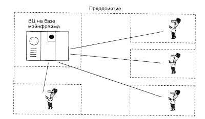
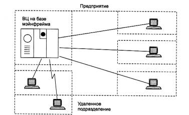
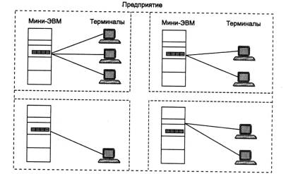
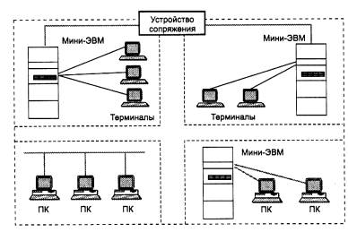

CMS лабораторные работы
Цель работы: Ознакомление с современными вычислительными системами, сетями и приложениями а также системами управления контентами.
Эволюция вычислительных систем
Концепция вычислительных сетей является логическим результатом эволюции компьютерной технологии. Первые компьютеры 50-х годов - большие, громоздкие и дорогие - предназначались для очень небольшого числа избранных пользователей. Часто эти монстры занимали целые здания. Такие компьютеры не были предназначены для интерактивной работы пользователя, а использовались в режиме пакетной обработки.
Системы пакетной обработки
Системы пакетной обработки, как правило, строились на базе мэйнфрейма - мощного и надежного компьютера универсального назначения. Пользователи подготавливали перфокарты, содержащие данные и команды программ, и передавали их в вычислительный центр. Операторы вводили эти карты в компьютер, а распечатанные результаты пользователи получали обычно только на следующий день (рис. 1.1). Таким образом, одна неверно набитая карта означала как минимум суточную задержку.

Рис. 1.1. Централизованная система на
базе мэйнфрейма
Конечно, для пользователей интерактивный режим работы, при котором можно с терминала оперативно руководить процессом обработки своих данных, был бы гораздо удобней. Но интересами пользователей на первых этапах развития вычислительных систем в значительной степени пренебрегали, поскольку пакетный режим - это самый эффективный режим использования вычислительной мощности, так как он позволяет выполнить в единицу времени больше пользовательских задач, чем любые другие режимы. Во главу угла ставилась эффективность работы самого дорогого устройства вычислительной машины - процессора, в ущерб эффективности работы использующих его специалистов.
Многотерминальные системы - прообраз сети
По мере удешевления процессоров в начале 60-х годов появились новые способы организации вычислительного процесса, которые позволили учесть интересы пользователей. Начали развиваться интерактивные многотерминальные системы разделения времени (рис. 1.2). В таких системах компьютер отдавался в распоряжение сразу нескольким пользователям. Каждый пользователь получал в свое распоряжение терминал, с помощью которого он мог вести диалог с компьютером. Причем время реакции вычислительной системы было достаточно мало для того, чтобы пользователю была не слишком заметна параллельная работа с компьютером и других пользователей. Разделяя таким образом компьютер, пользователи получили возможность за сравнительно небольшую плату пользоваться преимуществами компьютеризации.
Терминалы, выйдя за пределы вычислительного центра, рассредоточились по всему предприятию. И хотя вычислительная мощность оставалась полностью централизованной, некоторые функции - такие как ввод и вывод данных - стали распределенными. Такие многотерминальные централизованные системы внешне уже были очень похожи на локальные вычислительные сети. Действительно, рядовой пользователь работу за терминалом мэйнфрейма воспринимал примерно так же, как сейчас он воспринимает работу за подключенным к сети персональным компьютером. Пользователь мог получить доступ к общим файлам и периферийным устройствам, при этом у него поддерживалась полная иллюзия единоличного владения компьютером, так как он мог запустить нужную ему программу в любой момент и почти сразу же получить результат. (Некоторые, далекие от вычислительной техники пользователи даже были уверены, что все вычисления выполняются внутри их дисплея.)

Рис. 1.2. Многотерминальная система - прообраз
вычислительной сети
Таким образом, многотерминальные системы, работающие в режиме разделения времени, стали первым шагом на пути создания локальных вычислительных сетей. Но до появления локальных сетей нужно было пройти еще большой путь, так как многотерминальные системы, хотя и имели внешние черты распределенных систем, все еще сохраняли централизованный характер обработки данных. С другой стороны, и потребность предприятий в создании локальных сетей в это время еще не созрела - в одном здании просто нечего было объединять в сеть, так как из-за высокой стоимости вычислительной техники предприятия не могли себе позволить роскошь приобретения нескольких компьютеров. В этот период был справедлив так называемый «закон Гроша», который эмпирически отражал уровень технологии того времени. В соответствии с этим законом производительность компьютера была пропорциональна квадрату его стоимости, отсюда следовало, что за одну и ту же сумму было выгоднее купить одну мощную машину, чем две менее мощных - их суммарная мощность оказывалась намного ниже мощности дорогой машины.
Появление глобальных сетей
Тем не менее потребность в соединении компьютеров, находящихся на большом расстоянии друг от друга, к этому времени вполне назрела. Началось все с решения более простой задачи - доступа к компьютеру с терминалов, удаленных от него на многие сотни, а то и тысячи километров. Терминалы соединялись с компьютерами через телефонные сети с помощью модемов. Такие сети позволяли многочисленным пользователям получать удаленный доступ к разделяемым ресурсам нескольких мощных компьютеров класса суперЭВМ. Затем появились системы, в которых наряду с удаленными соединениями типа терминал-компьютер были реализованы и удаленные связи типа компьютер-компьютер. Компьютеры получили возможность обмениваться данными в автоматическом режиме, что, собственно, и является базовым механизмом любой вычислительной сети. Используя этот механизм, в первых сетях были реализованы службы обмена файлами, синхронизации баз данных, электронной почты и другие, ставшие теперь традиционными сетевые службы.
Таким образом, хронологически первыми появились глобальные вычислительные сети. Именно при построении глобальных сетей были впервые предложены и отработаны многие основные идеи и концепции современных вычислительных сетей. Такие, например, как многоуровневое построение коммуникационных протоколов, технология коммутации пакетов, маршрутизация пакетов в составных сетях.
Первые локальные сети
В начале 70-х годов произошел технологический прорыв в области производства компьютерных компонентов - появились большие интегральные схемы. Их сравнительно невысокая стоимость и высокие функциональные возможности привели к созданию мини-компьютеров, которые стали реальными конкурентами мэйнфреймов. Закон Гроша перестал соответствовать действительности, так как десяток мини-компьютеров выполнял некоторые задачи (как правило, хорошо распараллеливаемые) быстрее одного мэйнфрейма, а стоимость такой мини-компьютерной системы была меньше.
Даже небольшие подразделения предприятий получили возможность покупать для себя компьютеры. Мини-компьютеры выполняли задачи управления технологическим оборудованием, складом и другие задачи уровня подразделения предприятия. Таким образом, появилась концепция распределения компьютерных ресурсов по всему предприятию. Однако при этом все компьютеры одной организации по-прежнему продолжали работать автономно (рис. 1.3).
Но шло время, потребности пользователей вычислительной техники росли, им стало недостаточно собственных компьютеров, им уже хотелось получить возможность обмена данными с другими близко расположенными компьютерами. В ответ на эту потребность предприятия и организации стали соединять свои мини-компьютеры вместе и разрабатывать программное обеспечение, необходимое для их взаимодействия. В результате появились первые локальные вычислительные сети (рис. 1.4). Они еще во многом отличались от современных локальных сетей, в первую очередь - своими устройствами сопряжения. На первых порах для соединения компьютеров друг с другом использовались самые разнообразные нестандартные устройства со своим способом представления данных на линиях связи, своими типами кабелей и т. п. Эти устройства могли соединять только те типы компьютеров, для которых были разработаны, - например, мини-компьютеры PDP-11 с мэйнфреймом IBM 360 или компьютеры «Наири» с компьютерами «Днепр». Такая ситуация создала большой простор для творчества студентов - названия многих курсовых и дипломных проектов начинались тогда со слов «Устройство сопряжения...».

Рис. 1.3. Автономное использование нескольких
мини-компьютеров на одном предприятииM

Рис. 1.4. Различные типы связей в первых
локальных сетях
Создание стандартных технологий локальных сетей
В середине 80-х годов положение дел в локальных сетях стало кардинально меняться. Утвердились стандартные технологии объединения компьютеров в сеть - Ethernet, Arcnet, Token Ring. Мощным стимулом для их развития послужили персональные компьютеры. Эти массовые продукты явились идеальными элементами для построения сетей - с одной стороны, они были достаточно мощными для работы сетевого программного обеспечения, а с другой - явно нуждались в объединении своей вычислительной мощности для решения сложных задач, а также разделения дорогих периферийных устройств и дисковых массивов. Поэтому персональные компьютеры стали преобладать в локальных сетях, причем не только в качестве клиентских компьютеров, но и в качестве центров хранения и обработки данных, то есть сетевых серверов, потеснив с этих привычных ролей мини-компьютеры и мэйнфреймы.
Стандартные сетевые технологии превратили процесс построения локальной сети из искусства в рутинную работу. Для создания сети достаточно было приобрести сетевые адаптеры соответствующего стандарта, например Ethernet, стандартный кабель, присоединить адаптеры к кабелю стандартными разъемами и установить на компьютер одну из популярных сетевых операционных систем, например, NetWare. После этого сеть начинала работать и присоединение каждого нового компьютера не вызывало никаких проблем - естественно, если на нем был установлен сетевой адаптер той же технологии.
Локальные сети в сравнении с глобальными сетями внесли много нового в способы организации работы пользователей. Доступ к разделяемым ресурсам стал гораздо удобнее - пользователь мог просто просматривать списки имеющихся ресурсов, а не запоминать их идентификаторы или имена. После соединения с удаленным ресурсом можно было работать с ним с помощью уже знакомых пользователю по работе с локальными ресурсами команд. Последствием и одновременно движущей силой такого прогресса стало появление огромного числа непрофессиональных пользователей, которым совершенно не нужно было изучать специальные (и достаточно сложные) команды для сетевой работы. А возможность реализовать все эти удобства разработчики локальных сетей получили в результате появления качественных кабельных линий связи, на которых даже сетевые адаптеры первого поколения обеспечивали скорость передачи данных до 10 Мбит/с.
Конечно, о таких скоростях разработчики глобальных сетей не могли даже мечтать - им приходилось пользоваться теми каналами связи, которые были в наличии, так как прокладка новых кабельных систем для вычислительных сетей протяженностью в тысячи километров потребовала бы колоссальных капитальных вложений. А «под рукой» были только телефонные каналы связи, плохо приспособленные для высокоскоростной передачи дискретных данных - скорость в 1200 бит/с была для них хорошим достижением. Поэтому экономное расходование пропускной способности каналов связи часто являлось основным критерием эффективности методов передачи данных в глобальных сетях. В этих условиях различные процедуры прозрачного доступа к удаленным ресурсам, стандартные для локальных сетей, для глобальных сетей долго оставались непозволительной роскошью.
Современные тенденции
Сегодня вычислительные сети продолжают развиваться, причем достаточно быстро. Разрыв между локальными и глобальными сетями постоянно сокращается во многом из-за появления высокоскоростных территориальных каналов связи, не уступающих по качеству кабельным системам локальных сетей. В глобальных сетях появляются службы доступа к ресурсам, такие же удобные и прозрачные, как и службы локальных сетей. Подобные примеры в большом количестве демонстрирует самая популярная глобальная сеть - Internet.
Изменяются и локальные сети. Вместо соединяющего компьютеры пассивного кабеля в них в большом количестве появилось разнообразное коммуникационное оборудование - коммутаторы, маршрутизаторы, шлюзы. Благодаря такому оборудованию появилась возможность построения больших корпоративных сетей, насчитывающих тысячи компьютеров и имеющих сложную структуру. Возродился интерес к крупным компьютерам - в основном из-за того, что после спада эйфории по поводу легкости работы с персональными компьютерами выяснилось, что системы, состоящие из сотен серверов, обслуживать сложнее, чем несколько больших компьютеров. Поэтому на новом витке эволюционной спирали мэйнфреймы стали возвращаться в корпоративные вычислительные системы, но уже как полноправные сетевые узлы, поддерживающие Ethernet или Token Ring, а также стек протоколов TCP/IP, ставший благодаря Internet сетевым стандартом де-факто.
Проявилась еще одна очень важная тенденция, затрагивающая в равной степени как локальные, так и глобальные сети. В них стала обрабатываться несвойственная ранее вычислительным сетям информация - голос, видеоизображения, рисунки. Это потребовало внесения изменений в работу протоколов, сетевых операционных систем и коммуникационного оборудования. Сложность передачи такой мультимедийной информации по сети связана с ее чувствительностью к задержкам при передаче пакетов данных - задержки обычно приводят к искажению такой информации в конечных узлах сети. Так как традиционные службы вычислительных сетей - такие как передача файлов или электронная почта - создают малочувствительный к задержкам трафик и все элементы сетей разрабатывались в расчете на него, то появление трафика реального времени привело к большим проблемам.
Сегодня эти проблемы решаются различными способами, в том числе и с помощью специально рассчитанной на передачу различных типов трафика технологии АТМ, Однако, несмотря на значительные усилия, предпринимаемые в этом направлении, до приемлемого решения проблемы пока далеко, и в этой области предстоит еще много сделать, чтобы достичь заветной цели - слияния технологий не только локальных и глобальных сетей, но и технологий любых информационных сетей - вычислительных, телефонных, телевизионных и т. п. Хотя сегодня эта идея многим кажется утопией, серьезные специалисты считают, что предпосылки для такого синтеза уже существуют, и их мнения расходятся только в оценке примерных сроков такого объединения - называются сроки от 10 до 25 лет. Причем считается, что основой для объединения послужит технология коммутации пакетов, применяемая сегодня в вычислительных сетях, а не технология коммутации каналов, используемая в телефонии, что, наверно, должно повысить интерес к сетям этого типа, которым и посвящена данная книга.
Вычислительные сети - частный случай распределенных систем
Компьютерные сети относятся к распределенным (или децентрализованным) вычислительным системам. Поскольку основным признаком распределенной вычислительной системы является наличие нескольких центров обработки данных, то наряду с компьютерными сетями к распределенным системам относят также мультипроцессорные компьютеры и многомашинные вычислительные комплексы.
Мультипроцессорные компьютеры
В мультипроцессорных компьютерах имеется несколько процессоров, каждый из которых может относительно независимо от остальных выполнять свою программу. В мультипроцессоре существует общая для всех процессоров операционная система, которая оперативно распределяет вычислительную нагрузку между процессорами. Взаимодействие между отдельными процессорами организуется наиболее простым способом - через общую оперативную память.
Сам по себе процессорный блок не является законченным компьютером и поэтому не может выполнять программы без остальных блоков мультипроцессорного компьютера - памяти и периферийных устройств. Все периферийные устройства являются для всех процессоров мультипроцессорной системы общими. Территориальную распределенность мультипроцессор не поддерживает - все его блоки располагаются в одном или нескольких близко расположенных конструктивах, как и у обычного компьютера.
Основное достоинство мультипроцессора - его высокая производительность, которая достигается за счет параллельной работы нескольких процессоров. Так как при наличии общей памяти взаимодействие процессоров происходит очень быстро, мультипроцессоры могут эффективно выполнять даже приложения с высокой степенью связи по данным.
Еще одним важным свойством мультипроцессорных систем является отказоустойчивость, то есть способность к продолжению работы при отказах некоторых элементов, например процессоров или блоков памяти. При этом производительность, естественно, снижается, но не до нуля, как в обычных с истемах, в которых отсутствует избыточность.
Многомашинные системы
Многомашинная система - это вычислительный комплекс, включающий в себя несколько компьютеров (каждый из которых работает под управлением собственной операционной системы), а также программные и аппаратные средства связи компьютеров, которые обеспечивают работу всех компьютеров комплекса как единого целого.
Работа любой многомашинной системы определяется двумя главными компонентами: высокоскоростным механизмом связи процессоров и системным программным обеспечением, которое предоставляет пользователям и приложениям прозрачный доступ к ресурсам всех компьютеров, входящих в комплекс. В состав средств связи входят программные модули, которые занимаются распределением вычислительной нагрузки, синхронизацией вычислений и реконфигурацией системы. Если происходит отказ одного из компьютеров комплекса, его задачи могут быть автоматически переназначены и выполнены на другом компьютере. Если в состав многомашинной системы входят несколько контроллеров внешних устройств, то в случае отказа одного из них, другие контроллеры автоматически подхватывают его работу. Таким образом, достигается высокая отказоустойчивость комплекса в целом.
Помимо повышения отказоустойчивости, многомашинные системы позволяют достичь высокой производительности за счет организации параллельных вычислений. По сравнению с мультипроцессорными системами возможности параллельной обработки в многомашинных системах ограничены: эффективность распараллеливания резко снижается, если параллельно выполняемые задачи тесно связаны между собой по данным. Это объясняется тем, что связь между компьютерами многомашинной системы менее тесная, чем между процессорами в мультипроцессорной системе, так как основной обмен данными осуществляется через общие многовходовые периферийные устройства. Говорят, что в отличие от мультипроцессоров, где используются сильные программные и аппаратные связи, в многомашинных системах аппаратные и программные связи между обрабатывающими устройствами являются более слабыми. Территориальная распределенность в многомашинных комплексах не обеспечивается, так как расстояния между компьютерами определяются длиной связи между процессорным блоком и дисковой подсистемой.
Вычислительные сети
В вычислительных сетях программные и аппаратные связи являются еще более слабыми, а автономность обрабатывающих блоков проявляется в наибольшей степени - основными элементами сети являются стандартные компьютеры, не имеющие ни общих блоков памяти, ни общих периферийных устройств. Связь между компьютерами осуществляется с помощью специальных периферийных устройств - сетевых адаптеров, соединенных относительно протяженными каналами связи. Каждый компьютер работает под управлением собственной операционной системы, а какая-либо «общая» операционная система, распределяющая работу между компьютерами сети, отсутствует. Взаимодействие между компьютерами сети происходит за счет передачи сообщений через сетевые адаптеры и каналы связи. С помощью этих сообщений один компьютер обычно запрашивает доступ к локальным ресурсам другого компьютера. Такими ресурсами могут быть как данные, хранящиеся на диске, так и разнообразные периферийные устройства - принтеры, модемы, факс-аппараты и т. д. Разделение локальных ресурсов каждого компьютера между всеми пользователями сети - основная цель создания вычислительной сети.
Каким же образом сказывается на пользователе тот факт, что его компьютер подключен к сети? Прежде всего, он может пользоваться не только файлами, дисками, принтерами и другими ресурсами своего компьютера, но аналогичными ресурсами других компьютеров, подключенных к той же сети. Правда, для этого недостаточно снабдить компьютеры сетевыми адаптерами и соединить их кабельной системой. Необходимы еще некоторые добавления к операционным системам этих компьютеров. На тех компьютерах, ресурсы которых должны быть доступны всем пользователям сети, необходимо добавить модули, которые постоянно будут находиться в режиме ожидания запросов, поступающих по сети от других компьютеров. Обычно такие модули называются программными серверами (server), так как их главная задача - обслуживать (serve) запросы на доступ к ресурсам своего компьютера. На компьютерах, пользователи которых хотят получать доступ к ресурсам других компьютеров, также нужно добавить к операционной системе некоторые специальные программные модули, которые должны вырабатывать запросы на доступ к удаленным ресурсам и передавать их по сети на нужный компьютер. Такие модули обычно называют программными клиентами (client). Собственно же сетевые адаптеры и каналы связи решают в сети достаточно простую задачу - они передают сообщения с запросами и ответами от одного компьютера к другому, а основную работу по организации совместного использования ресурсов выполняют клиентские и серверные части операционных систем.
Пара модулей «клиент - сервер» обеспечивает совместный доступ пользователей к определенному типу ресурсов, например к файлам. В этом случае говорят, что пользователь имеет дело с файловой службой (service). Обычно сетевая операционная система поддерживает несколько видов сетевых служб для своих пользователей - файловую службу, службу печати, службу электронной почты, службу удаленного доступа и т. п.
Термины «клиент» и «сервер» используются не только для обозначения программных модулей, но и компьютеров, подключенных к сети. Если компьютер предоставляет свои ресурсы другим компьютерам сети, то он называется сервером, а если он их потребляет - клиентом. Иногда один и тот же компьютер может одновременно играть роли и сервера, и клиента.
Распределенные программы
Сетевые службы всегда представляют собой распределенные программы. Распределенная программа - это программа, которая состоит из нескольких взаимодействующих частей (в приведенном на рис. 1.5 примере - из двух), причем каждая часть, как правило, выполняется на отдельном компьютере сети.
Рис. 1.5. Взаимодействие частей
распределенного приложения
До сих пор речь шла о системных распределенных программах. Однако в сети могут выполняться и распределенные пользовательские программы - приложения. Распределенное приложение также состоит из нескольких частей, каждая и которых выполняет какую-то определенную законченную работу по решению прикладной задачи. Например, одна часть приложения, выполняющаяся на компьютере пользователя, может поддерживать специализированный графический интерфейс вторая - работать на мощном выделенном компьютере и заниматься статистической обработкой введенных пользователем данных, а третья - заносить полученные результаты в базу данных на компьютере с установленной стандартной СУБД. Распределенные приложения в полной мере используют потенциальные возможности распределенной обработки, предоставляемые вычислительной сетью, и поэтому часто называются сетевыми приложениями.
Следует подчеркнуть, что не всякое приложение, выполняемое в сети, является сетевым. Существует большое количество популярных приложений, которые не являются распределенными и целиком выполняются на одном компьютере сети. Тем не менее и такие приложения могут использовать преимущества сети за счет встроенных в операционную систему сетевых служб. Значительная часть истории локальных сетей связана как раз с использованием таких нераспределенных приложений. Рассмотрим, например, как происходила работа пользователя с известной в свое время СУБД dBase. Обычно файлы базы данных, с которыми работали все пользователи сети, располагались на файловом сервере. Сама же СУБД хранилась на каждом клиентском компьютере в виде единого программного модуля.
Программа dBase была рассчитана на обработку только локальных данных, то есть данных, расположенных на том же компьютере, что и сама программа. Пользователь запускал dBase на своем компьютере, и она искала данные на локальном диске, совершенно не принимая во внимание существование сети. Чтобы обрабатывать с помощью dBase данные на удаленном компьютере, пользователь обращался к услугам файловой службы, которая доставляла данные с сервера на клиентский компьютер и создавала для СУБД эффект их локального хранения.
Большинство приложений, используемых в локальных сетях в середине 80-х годов, являлись обычными, нераспределенными приложениями. И это понятно - они были написаны для автономных компьютеров, а потом просто были перенесены в сетевую среду. Создание же распределенных приложений, хотя и сулило много преимуществ (уменьшение сетевого трафика, специализация компьютеров), оказалось делом совсем не простым. Нужно было решать множество дополнительных проблем - на сколько частей разбить приложение, какие функции возложить на каждую часть, как организовать взаимодействие этих частей, чтобы в случае сбоев и отказов оставшиеся части корректно завершали работу, и т. д., и т. п. Поэтому до сих пор только небольшая часть приложений является распределенными, хотя очевидно, что именно за этим классом приложений будущее, так как они в полной мере могут использовать потенциальные возможности сетей по распараллеливанию вычислений.
Систе́ма управле́ния содержи́мым (конте́нтом)(англ. Content management system, CMS)— информационная система или компьютерная программа, используемая для обеспечения и организации совместного процесса создания, редактирования и управления контентом (т.е. содержимым): Главной целью такой системы является возможность собирать в единое целое и объединять на основе ролей и задач все разнотипные источники знаний и информации, доступные как внутри организации, так и за ее пределами, а также возможность обеспечения взаимодействия сотрудников, рабочих групп и проектов с созданными ими базами знаний, информацией и данными так, чтобы их легко можно было найти, извлечь и повторно использовать привычным для пользователя образом.
В системе управления содержимым могут быть определены самые различные данные: документы, фильмы, фотографии, номера телефонов, научные данные, и так далее. Такая система часто используется для хранения, управления, пересмотра и публикации документации. Контроль версий является одним из основных её преимуществ, когда содержимое изменяется группой лиц.
В общем случае системы управления содержимым делятся на:
- Cистему управления содержания масштаба предприятия (англ. Enterprise Content Management System системы управления содержанием предприятий)
- Система управления веб-содержимым (англ. Web Content Management System)
В силу того, что ECMS имеют глубокую внутреннюю классификацию по предметным областям (HRM, DMS, CRM, ERP и т. д.) термин CMS заместил собой WCMS, превратившись в синоним системы управления сайтами. Подобные CMS позволяют управлять текстовым и графическим наполнением веб-сайта, предоставляя пользователю интерфейс для работы с содержимым сайта, удобные инструменты хранения и публикации информации, автоматизируя процессы размещения информации в базах данных и её выдачи в HTML.
Существует множество готовых систем управления содержимым сайта, в том числе и бесплатных. Их можно разделить на три типа по способу работы:
- Генерация страниц по запросу. Системы такого типа работают на основе связки «Модуль редактирования → База данных → Модуль представления». Модуль представления генерирует страницу с содержанием при запросе на него, на основе информации из базы данных. Информация в базе данных изменяется с помощью модуля редактирования. Страницы заново создаются сервером при каждом запросе, что в свою очередь создаёт дополнительную нагрузку на системные ресурсы. Нагрузка может быть многократно снижена при использовании средств кэширования, которые имеются в современных веб-серверах.
- Генерация страниц при редактировании. Системы этого типа суть программы для редактирования страниц, которые при внесении изменений в содержание сайта создают набор статических страниц. При таком способе в жертву приноситсяинтерактивность между посетителем и содержимым сайта.
- Смешанный тип. Как понятно из названия, сочетает в себе преимущества первых двух. Может быть реализован путём кэширования — модуль представления генерирует страницу один раз, в дальнейшем она в несколько раз быстрее подгружается из кэша. Кэш может обновляться как автоматически, по истечении некоторого срока времени или при внесении изменений в определённые разделы сайта, так и вручную по команде администратора. Другой подход — сохранение определённых информационных блоков на этапе редактирования сайта и сборка страницы из этих блоков при запросе соответствующей страницы пользователем.
Особенности
Система управления — программа, предоставляющая инструменты для добавления, редактирования, удаления информации на сайте. Существуют разнообразные системы управления сайтом, среди которых встречаются платные и бесплатные, построенные по разным технологиям. Каждый сайт имеет панель управления, которая является только частью всей программы, но достаточна для управления им.
Термин контент-менеджер обозначает род профессиональной деятельности — редактор сайта.
Большая часть современных систем управления содержимым реализуется в виде визуального (WYSIWYG) редактора — программы, которая создаёт HTML-код из специальной упрощённой разметки, позволяющей пользователю проще форматировать текст.
Выполнение работы
- Ознакомится с минимальными требованиями для установки СМS
- Зайти в сайт http://www.cmslist.ru/ и подобрать в зависимости от требования компании или подразделения CMS
- Изучить выбранный CMS и дать характеристику.
Вопросы
- Современные вычислительные системы и приложения.
- Распределенные системы
- Система управления контентом